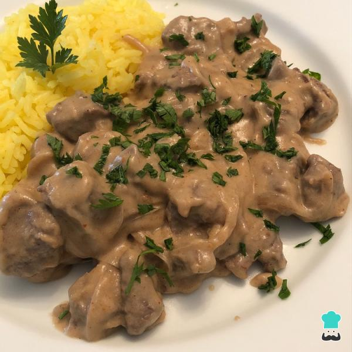

Strogonoff Russo

Você sabia que o strognoff tradicional é originário da Rússia, preparado com cubinhos de carne bovina e creme de leite e sem extrato de tomate? Peguei nessa receita, preparei ela e o resultado ficou muito gostoso!
Ingredientes:
- 500 gramas de filé mignon picado
- 1 cebola média fatiada
- 1 colher de sopa de azeite de oliva
- 2 colheres de sopa de manteiga
- 2 colheres de sopa de farinha de arroz
- 1½ xícaras de caldo de carne caseiro
- ½ xícara de creme de leite de caixinha
- ½ limão (suco)
- Sal e pimenta-do-reino moída a gosto
- 1 colher de café de páprica picante
- 1 colher de café de páprica doce
- Salsinha picada a gosto
Modo de Fazer:
- Em uma frigideira grande comece refogando a cebola no azeite até ficar dourada.
- Adicione o filé mignon picado e refogue até a carne ficar dourada. Coloque então o sal e a pimenta do reino a gosto, desligue o fogo e reserve.
- O passo seguinte desta receita de strogonoff russo original é começar preparando o molho/creme. Para isso em um recipiente pequeno misture o creme de leite e o suco de limão. Mexa bem para formar um creme chamado creme azedo (por ser meio ácido) e reserve.
- Em uma outra panela derreta a manteiga e adicione a farinha de arroz. Misture bem.
- Nessa mistura de manteiga e farinha de arroz junte um pouco do caldo de carne previamente aquecido. Misture bem e vá adicionando mais, até acabar.
- Continue misturando até formar um creme consistente, semelhante a um molho branco. Esse creme irá tornar esta receita de strogonoff original russo ainda mais gostosa!
- Junte então o creme azedo reservado e misture bem.
- Adicione o creme à carne, misture bem e acerte os temperos. Se quiser, já pode servir assim! Esta é a versão original russa.
- Adicione páprica doce e picante - elas ajudam a dar uma corzinha avermelhada ao strogonoff. Misture bem.
- Sirva seu strogonoff russo com salsinha picada por cima e acompanhe com arroz e batata palha!